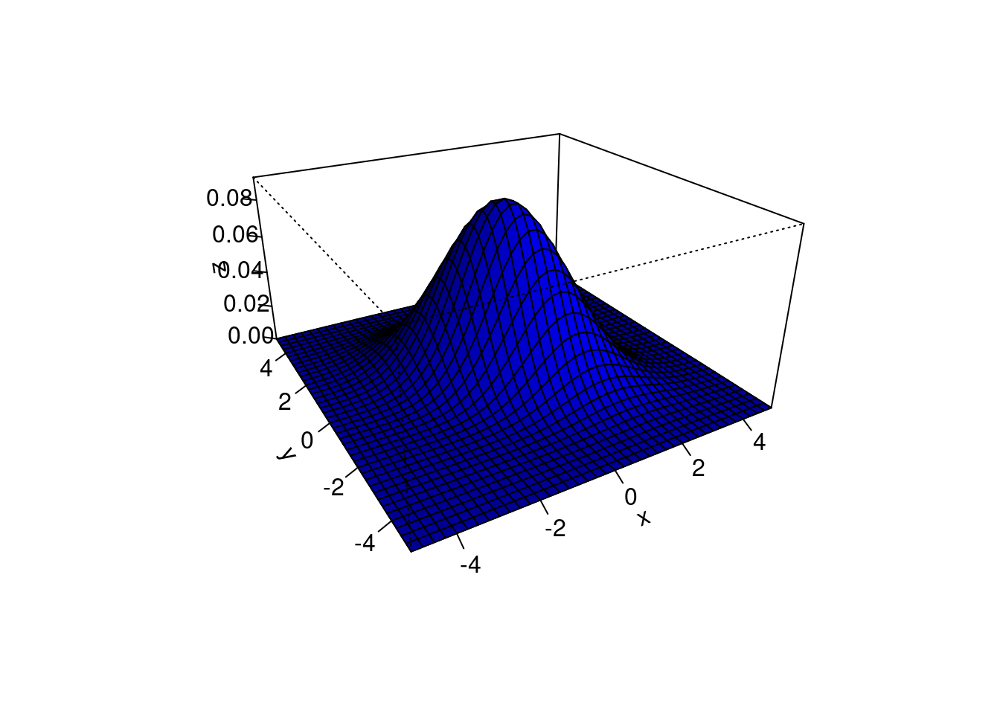
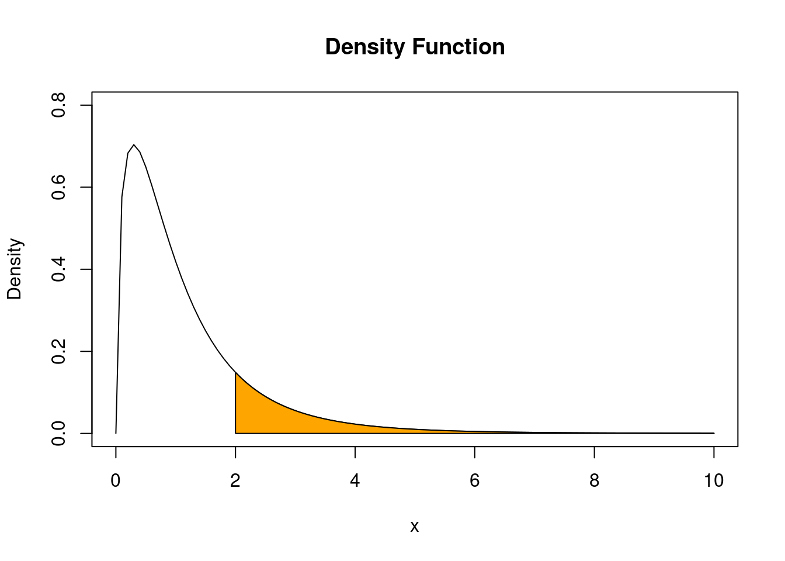

The content of this chapter follows closely (often verbatim) the fantastic book by Wasserman (2004).
2.1 Basics in Probability Theory
Probability is the mathematical language for quantifying uncertainty. We can apply probability theory to a diverse set of problems, from coin flipping to the analysis of econometric problems. The starting point is to specify the sample space, that is, the set of possible outcomes.
2.1.1 Sample Spaces and (Elementary) Events
The sample space\(\Omega,\) is the set of possible outcomes of an experiment. Points \(\omega\) in \(\Omega\) are called sample outcomes or realizations or elementary events. Events are subsets of \(\Omega\).
Example: If we toss a coin twice then \(\Omega=\{H H, H T, T H, T T\}.\) The event that the first toss is heads is \(A=\{H H, H T\}.\)
Example: Let \(\omega\) be the outcome of a measurement of some physical quantity, for example, temperature. Then \(\Omega=\mathbb{R}=(-\infty, \infty).\) The event that the measurement is larger than 10 but less than or equal to 23 is \(A=(10,23].\)
Example: If we toss a coin forever then the sample space is the infinite set \(\Omega=\left\{\omega=\left(\omega_{1}, \omega_{2}, \omega_{3}, \ldots,\right)|\omega_{i} \in\{H, T\}\right\}\) Let \(A\) be the event that the first head appears on the third toss. Then \(A=\left\{\left(\omega_{1}, \omega_{2}, \omega_{3}, \ldots,\right)| \omega_{1}=T, \omega_{2}=T, \omega_{3}=H, \omega_{i} \in\{H, T\} \text { for } i>3\right\}.\)
Given an event \(A,\) let \(A^{c}=\{\omega \in \Omega ; \omega \notin A\}\) denote the complement of \(A\). Informally, \(A^{c}\) can be read as “not \(A\).” The complement of \(\Omega\) is the empty set \(\emptyset\). The union of events \(A\) and \(B\) is defined as \[
A\cup B=\{\omega \in \Omega|\omega\in A\text{ or }\omega \in B\text{ or }\omega\in\text{ both}\}
\] which can be thought of as “\(A\) or \(B\).” If \(A_{1}, A_{2}, \ldots\) is a sequence of sets then \[
\bigcup_{i=1}^{\infty} A_{i}=\left\{\omega \in \Omega: \omega \in A_{i} \text { for at least one i }\right\}.
\] The intersection of \(A\) and \(B\) is defined as \[
A \cap B=\{\omega \in \Omega ; \omega \in A\text{ and }\omega \in B\}
\] which reads as “\(A\) and \(B\).” Often \(A \cap B\) is also written shortly as \(AB\) or as \(A,B.\)
If \(A_{1}, A_{2}, \ldots\) is a sequence of sets then \[
\bigcap_{i=1}^{\infty} A_{i}=\left\{\omega \in \Omega: \omega \in A_{i} \text { for all i }\right\}.
\]
If every element of \(A\) is also contained in \(B\) we write \(A \subset B\) or, equivalently, \(B \supset A\). If \(A\) is a finite set, let \(|A|\) denote the number of elements in \(A .\) We say that \(A_{1}, A_{2}, \ldots\) are disjoint or mutually exclusive if \(A_{i} \cap A_{j}=\emptyset\) whenever \(i \neq j\). For example, \(A_{1}=[0,1), A_{2}=[1,2), A_{3}=[2,3), \ldots\) are disjoint. A partition of \(\Omega\) is a sequence of disjoint sets \(A_{1}, A_{2}, \ldots\) such that \(\bigcup_{i=1}^{\infty} A_{i}=\Omega\).
Summary: Sample space and events
\[
\begin{array}{ll}
\Omega & \text { sample space } \\
\omega & \text { outcome, elementary event, realization}\\
A & \text { event (subset of } \Omega) \\
|A| & \text { number of points in } A \text { (if } A \text { is finite) }\\
A^{c} & \text { complement of } A (\operatorname{not} A)\\
A \cup B &\text{ union }(A\text{ or }B)\\
A \cap B &\text{ intersection }(A \text { and } B);\text{ short notations: }AB\text{ or }A,B\\
A \subset B &\text{ set inclusion }(A \text{ is a subset of or equal to }B)\\
\emptyset &\text{ null event (always false)}\\
\Omega &\text{ true event (always true)}
\end{array}
\]
2.1.2 Probability
We want to assign a real number \(P(A)\) to every event \(A,\) called the probability of \(A .\) We also call \(P\) a probability distribution or a probability measure. To qualify as a probability, \(P\) has to satisfy three axioms. That is, a function \(P\) that assigns a real number \(P(A)\in[0,1]\) to each event \(A\) is a probability distribution or a probability measure if it satisfies the following three axioms:
Axiom 1:\(P(A) \geq 0\) for every \(A\)
Axiom 2:\(P(\Omega)=1\)
Axiom 3: If \(A_{1}, A_{2}, \ldots\) are disjoint then
Note: It is not always possible to assign a probability to every event \(A\) if the sample space is large. For instance, in the case of \(\Omega=\mathbb{R}\) strange things can happen. There are pathological sets (e.g. Vitali sets) that simply break down the mathematics since they are non-measurable (i.e. we cannot assign probabilities to them). Therefore, in cases like \(\Omega=\mathbb{R}\), we assign probabilities to a limited class of sets called a \(\sigma\)-field or \(\sigma\)-algebra. For \(\Omega=\mathbb{R}\), the canonical \(\sigma\)-algebra is the Borel \(\sigma\)-algebra. The Borel \(\sigma\)-algebra on \(\mathbb{R}\) is generated by the collection of all open subsets of \(\mathbb{R}\). In this course, we use the Borel \(\sigma\)-algebra and fortunately we do not have to bother with it any further. It’s there lurking in the background making things work for us.
One can derive many properties of \(P\) from the axioms. Here are a few:
A less obvious property is given in the following: For any events \(A\) and \(B\) we have that,
\[
P(A \cup B)=P(A)+P(B)-P(A B).
\]
Example: Two consecutive coin tosses. Let \(H_{1}\) be the event that heads occurs on toss 1 and let \(H_{2}\) be the event that heads occurs on toss 2. If all outcomes are equally likely, that is, \[
P\left(\left\{H_{1}, H_{2}\right\}\right)=P\left(\left\{H_{1}, T_{2}\right\}\right)=P\left(\left\{T_{1}, H_{2}\right\}\right)=P\left(\left\{T_{1}, T_{2}\right\}\right)=1 / 4,
\] then \[
P\left(H_{1} \cup H_{2}\right)=P\left(H_{1}\right)+P\left(H_{2}\right)-P\left(H_{1} H_{2}\right)=\frac{1}{2}+\frac{1}{2}-\frac{1}{4}=\frac{3}{4}.
\]
Probabilities as frequencies
One can interpret \(P(A)\) in terms of frequencies. That is, \(P(A)\) is the (infinitely) long run proportion of times that \(A\) is true in repetitions. For example, if we say that the probability of heads is \(1 / 2\), i.e \(P(H)=1/2\) we mean that if we flip the coin many times then the proportion of times we get heads tends to \(1 / 2\) as the number of tosses increases. An infinitely long, unpredictable sequence of tosses whose limiting proportion tends to a constant is an idealization, much like the idea of a straight line in geometry.
The following R codes approximates the probability \(P(H)=1/2\) using 5, 50 and 5,000 many (pseudo) random coin flips:
set.seed(869)## 1 (fair) coin-flip:results <-sample(x =c("H", "T"), size =5, replace =TRUE)## Relative frequency of "H" in 5 coin-flipslength(results[results=="H"])/5
[1] 0.2
## 10 (fair) coin-flips:results <-sample(x =c("H", "T"), size =50, replace =TRUE)## Relative frequency of "H" in 50 coin-flipslength(results[results=="H"])/50
[1] 0.52
## 100000 (fair) coin-flips:results <-sample(x =c("H", "T"), size =5000, replace =TRUE)## Relative frequency of "H" in 5000 coin-flipslength(results[results=="H"])/5000
[1] 0.5024
2.1.3 Independent Events
If we flip a fair coin twice, then the probability of two heads is \(\frac{1}{2} \times \frac{1}{2}\). We multiply the probabilities because we regard the two tosses as independent. Two events \(A\) and \(B\) are called independent if
\[
P(A B)=P(A) P(B).
\]
Or more generally, a whole set of events \(\{A_i|i\in I\}\) is independent if
\[
P\left(\bigcap_{i \in J} A_{i}\right)=\prod_{i \in J}P\left(A_{i}\right)
\] for every finite subset \(J\) of \(I\), where \(I\) denotes the not necessarily finite index set (e.g. \(I=\{1,2,\dots\}\)).
Independence can arise in two distinct ways. Sometimes, we explicitly assume that two events are independent. For example, in tossing a coin twice, we usually assume the tosses are independent which reflects the fact that the coin has no memory of the first toss.
In other instances, we derive independence by verifying that the definition of independence \(P(A B)=P(A)P(B)\) holds. For example, in tossing a fair die , let \(A=\{2,4,6\}\) be the event of observing an even number and let \(B=\{1,2,3,4\}\) be the event of observing no \(5\) and no \(6\). Then, \(A \cap B=\{2,4\}\) is the event of observing either a \(2\) or a \(4\). Are the events \(A\) and \(B\) independent? \[
P(A B)=\frac{2}{6}=P(A)P(B)=\frac{1}{2}\cdot \frac{2}{3}
\] and so \(A\) and \(B\) are independent. In this case, we didn’t assume that \(A\) and \(B\) are independent it just turned out that they were.
Cautionary Note: Suppose that \(A\) and \(B\) are disjoint events, i.e. \(AB=\emptyset,\) each with positive probability \(P(A)>0\) and \(P(B)>0.\) Can they be independent? No! This follows since
\[
P(A B)=P(\emptyset)=0\neq P(A)P(B)>0.
\] Except in this special case, there is no way to judge (in-)dependence by looking at the sets in a Venn diagram.
Summary: Independent Events
\(A\) and \(B\) are independent if \(P(A B)=P(A) P(B)\).
Independence is sometimes assumed and sometimes derived.
Disjoint events with strictly positive probabilities are not independent.
2.1.4 Conditional Probability
If \(P(B)>0\) then the conditional probability of \(A\) given \(B\) is \[
P(A \mid B)=\frac{P(A B)}{P(B)}.
\] Think of \(P(A \mid B)\) as the fraction of times \(A\) occurs among those in which \(B\) occurs. Here are some facts about conditional probabilities:
The rules of probability apply to events on the left of the bar “\(\mid\)”. That is, for any fixed \(B\) such that \(P(B)>0,\)\(P(\cdot \mid B)\) is a probability, i.e., it satisfies the three axioms of probability:
\(P(A \mid B) \geq 0\)
\(P(\Omega \mid B)=1\)
If \(A_{1}, A_{2}, \ldots\) are disjoint then \(P\left(\bigcup_{i=1}^{\infty} A_{i} \mid B\right)=\sum_{i=1}^{\infty} P\left(A_{i} \mid B\right).\)
But it’s generally not true that \(P(A \mid B \cup C)=P(A \mid B)+P(A \mid C).\)
In general it is also not the case that \(P(A \mid B)=P(B \mid A)\). People get this confused all the time. For example, the probability of spots given you have measles is 1 but the probability that you have measles given that you have spots is not \(1 .\) In this case, the difference between \(P(A \mid B)\) and \(P(B \mid A)\) is obvious but there are cases where it is less obvious. This mistake is made often enough in legal cases that it is sometimes called the “prosecutor’s fallacy”.
Example: A medical test for a disease \(D\) has outcomes \(+\) and \(-.\) The probabilities are:
\[
\begin{array}{c|cc|c}
& D & D^{c} \\
\hline
+ & .0081 & .0900 & .0981\\
- & .0009 & .9010 & .9019\\
\hline
& .0090 & .9910 & 1
\end{array}
\] From the definition of conditional probability, we have:
Sensitivity of the test: \[P(+\mid D)=P(+\cap D) / P(D)=0.0081 /(0.0081+0.0009)=0.9\]
Specificity of the test: \[P(-\mid D^{c})=P(-\cap D^{c}) / P(D^{c})=0.9010/(0.9010+0.0900)\approx 0.9\]
Apparently, the test is fairly accurate. Sick people yield a positive test result 90 percent of the time and healthy people yield a negative test result about 90 percent of the time. Suppose you go for a test and get a positive result. What is the probability you have the disease? Most people answer \(0.90=90\%\). The correct answer is \(P(D \mid+)=P(+\cap D) / P(+)=0.0081 /(0.0081+0.0900)=0.08.\) The lesson here is that you need to compute the answer numerically. Don’t trust your intuition.
Independence via Conditional Probabilities
If \(A\) and \(B\) are independent events then \[
P(A \mid B)=\frac{P(A B)}{P(B)}=\frac{P(A) P(B)}{P(B)}=P(A)
\] So another interpretation of independence is that knowing \(B\) doesn’t change the probability of \(A\).
From the definition of conditional probability we can write \[
P(A B)=P(A \mid B) P(B)
\] and also \[
P(A B)=P(B \mid A) P(A).
\] Often, these formulas give us a convenient way to compute \(P(A B)\) when \(A\) and \(B\) are not independent.
Example: Draw two cards from a deck, without replacement. Let \(A\) be the event that the first draw is Ace of Clubs and let \(B\) be the event that the second draw is Queen of Diamonds. Then \(P(A, B)=P(A) P(B \mid A)=(1 / 52) \times(1 / 51)\)
Summary: Conditional Probability
If \(P(B)>0\) then \(P(A \mid B)=P(A B)/P(B)\)
\(P(\cdot \mid B)\) satisfies the axioms of probability, for fixed \(B\). In general, \(P(A \mid \cdot)\) does not satisfy the axioms of probability, for fixed \(A\).
In general, \(P(A \mid B) \neq P(B \mid A)\).
\(A\) and \(B\) are independent if and only if \(P(A \mid B)=P(A)\).
2.2 Random Variables
Statistics and econometrics are concerned with data. How do we link sample spaces, events and probabilities to data? The link is provided by the concept of a random variable. A real-valued random variable is a mapping \(X: \Omega \rightarrow \mathbb{R}\) that assigns a real number \(X(\omega)\in\mathbb{R}\) to each outcome \(\omega\).
At a certain point in most statistics/econometrics courses, the sample space, \(\Omega\), is rarely mentioned and we work directly with random variables. But you should keep in mind that the sample space is really there, lurking in the background.
Example: Flip a coin ten times. Let \(X(\omega)\) be the number of heads in the sequence \(\omega.\) For example, if \(\omega=\text{HHTHHTHHTT}\) then \(X(\omega)=6\).
Example: Let \(\Omega=\left\{(x, y)|x^{2}+y^{2} \leq 1\right\}\) be the unit disc. Consider drawing a point “at random” from \(\Omega\). A typical outcome is then of the form \(\omega=(x, y) .\) Some examples of random variables are \(X(\omega)=x, Y(\omega)=y, Z(\omega)=x+y, W(\omega)=\sqrt{x^{2}+y^{2}}\).
Given a real-valued random variable \(X\in\mathbb{R}\) and a subset \(A\) of the real line (\(A\subset\mathbb{R}\)), define \(X^{-1}(A)=\{\omega \in \Omega|X(\omega) \in A\}\). This allows us to link the probabilities on the random variable \(X\), i.e. the probabilities we are usually working with, to the underlying probabilities on the events, i.e. the probabilities lurking in the background.
Example: Flip a coin twice and let \(X\) be the number of heads. Then, \(P_X(X=0)=P(\{T T\})=1 / 4\), \(P_X(X=1)=P(\{H T, T H\})=1 / 2\) and \(P_X(X=2)=P(\{H H\})=1 / 4\). Thus, the events and their associated probability distribution, \(P\), and the random variable \(X\) and its distribution, \(P_X\), can be summarized as follows:
\(\omega\)
\(P(\{\omega\})\)
\(X(\omega)\)
\(T T\)
\(1 / 4\)
0
\(T H\)
\(1 / 4\)
1
\(H T\)
\(1 / 4\)
1
\(H H\)
\(1 / 4\)
2
\(x\)
\(P_X(X=x)\)
0
\(1 / 4\)
1
\(1 / 2\)
2
\(1 / 4\)
Here, \(P_{X}\) is not the same probability function as \(P\), because \(P\) maps from the sample space events, \(\omega\), to \([0,1]\), while \(P_X\) maps from the random-variable events, \(X(\omega)\), to \([0,1]\). We will typically forget about the sample space \(\Omega\) and just think of the random variable as an experiment with real-valued (possible multivariate) outcomes. We will therefore write \(P\left(X=x_{k}\right)\) instead of \(P_{X}\left(X=x_{k}\right)\) to simplify the notation.
2.2.1 Univariate Distribution and Probability Functions
2.2.1.1 Cumulative Distribution Function
The cumulative distribution function (cdf)\[F_{X}: \mathbb{R} \rightarrow [0,1]\] of a real-valued random variable \(X\in\mathbb{R}\) is defined by \[
F_{X}(x)=\mathbb{P}(X \leq x).
\]
You might wonder why we bother to define the cdf. The reason is that it effectively contains all the information about the random variable. Indeed, let \(X\in\mathbb{R}\) have cdf \(F\) and let \(Y\in\mathbb{R}\) have cdf \(G\). If \(F(x)=G(x)\) for all \(x\in\mathbb{R}\) then \(P(X \in A)=P(Y \in A)\) for all \(A\subset\mathbb{R}\). In order to denote that two random variables, here \(X\) and \(Y\), have the same distribution, one can write shortly \(X\overset{d}{=}Y\).
The defining properties of a cdf: A function \(F\) mapping the real line to \([0,1]\), short \(F:\mathbb{R}\to[0,1],\) is called a cdf for some probability measure \(P\) if and only if it satisfies the following three properties:
\(F\) is non-decreasing i.e. \(x_{1}<x_{2}\) implies that \(F\left(x_{1}\right) \leq F\left(x_{2}\right)\).
\(F\) is normalized: \(\lim_{x\rightarrow-\infty} F(x)=0\) and \(\lim_{x \rightarrow \infty} F(x)=1\)
\(F\) is right-continuous, i. e. \(F(x)=F\left(x^{+}\right)\) for all \(x\), where \[
F\left(x^{+}\right)=\lim_{y\to x, y>x} F(y).
\]
Alternatively to cumulative distribution functions one can use probability (mass) functions in order to describe the probability law of discrete random variables and density functions in order to describe the probability law of continuous random variables.
2.2.1.2 Probability Functions for Discrete Random Variables
A random variable \(X\) is if it takes only countably many values \[
X\in\{x_{1}, x_{2}, \ldots\}.
\] For instance, \(X\in\{1,2,3\}\) or \(X\in\{2,4,6,\dots\}\) or \(X\in\mathbb{Z}\) or \(X\in\mathbb{Q}\).
We define the probability function or probability mass function (pmf) for \(X\) by \[
f_{X}(x)=\mathbb{P}(X=x)\quad\text{for all}\quad x\in\{x_1,x_2,\dots\}
\]
2.2.1.3 Density Functions for Continuous Random Variables
A random variable \(X\) is if there exists a function \(f_{X}\) such that
\(f_{X}(x)\geq 0\) for all \(x\)
\(\int_{-\infty}^{\infty}f_{X}(x)dx=1\) and
\(\mathbb{P}(a<X<b)=\int_{a}^{b} f_{X}(x) dx\) for every \(a\leq b\).
The function \(f_{X}\) is called the probability density function (pdf) or short density function.
For density functions, we have that \[
F_{X}(x)=\int_{-\infty}^{x} f_{X}(t) dt\quad\text{and}\quad f_{X}(x)=F_{X}^{\prime}(x)
\] at all points \(x\) at which \(F_{X}\) is differentiable.
2.2.2 Multivariate Distribution and Probability Functions
A \(d\)-dimensional random vector is a column-vector \(X=(X_1,\dots,X_d)^\prime\), where each element is a univariate random variable.
2.2.2.1 Multidimensional Distribution Function
The multivariate distribution function\(F\) is given by \[F(a_1,\dots,a_d)=P(X_1\le a_1,\dots,X_d\le a_d).\]
## Install the package if not installed yet# install.packages("mnormt")library(mnormt)x <-seq(-5, 5, 0.25) y <-seq(-5, 5, 0.25)mu <-c(0, 0)sigma <-matrix(c(2, -1, -1, 2), nrow =2)f <-function(x, y) pmnorm(cbind(x, y), mu, sigma)z <-outer(x, y, f)persp(x, y, z, theta =-30, phi =25, shade =0.75, col ="blue", expand =0.5, r =2, ltheta =25, ticktype ="detailed")
2.2.2.2 Multidimensional Probability Function
Discrete random vectors:\(X\) takes only countably many (i.e. discrete) values \(\mathbf{x}_1,\mathbf{x}_2,\dots\in\mathbb{R}^d\) and has a multidimensional probability function\(p(\mathbf{x}_i)=P(X=\mathbf{x}_i)\) for \(i=1,2,\dots\). That is, \[\begin{align*}
P(X\in [a_1,b_1]\times\dots\times [a_d,b_d])=
\sum_{\mathbf{x}_i\in [a_1,b_1]\times\dots\times [a_d,b_d]}p(\mathbf{x}_i).
\end{align*}\]
2.2.2.3 Multidimensional Density Function
Continuous random vectors:\(X\) takes values in \(\mathbb{R}^d\) and has a multidimensional density function\(f(x_1,\dots,x_d)\). That is, \[\begin{align*}
P(X\in [a_1,b_1]\times\dots\times [a_d,b_d])=\int\limits_{a_d}^{b_d}\dots \int\limits _{a_1}^{b_1}f(x_1,\dots,x_d)dx_1\dots dx_d.
\end{align*}\] In the following we focus only on continuous random vectors, but the discrete cases are treated analogously. Properties of multivariate density functions:
## Load the packagelibrary(mnormt)x <-seq(-5, 5, 0.25) y <-seq(-5, 5, 0.25)mu <-c(0, 0)sigma <-matrix(c(2, -1, -1, 2), nrow =2)f <-function(x, y) dmnorm(cbind(x, y), mu, sigma)z <-outer(x, y, f)persp(x, y, z, theta =-30, phi =25, shade =0.75, col ="blue", expand =0.5, r =2, ltheta =25, ticktype ="detailed")

2.2.2.4 Marginal Distribution Functions and Marginal Density Functions
Each random element, \(X_j\), with \(j=1,\dots,d\), of the random vector \(X\) has its own marginal distribution\(F_j\). This is just the univariate distribution of \(X_j\) when ignoring all other random variables in \(X\). Formally we have:
Marginal distribution function:\(F_j(x)=P(X_j\leq x)\)
Marginal density function:\(f_j\), for instance, for \(j=1\):
Often, we are interested in the conditional distribution of \(X_j\) given certain values of all other random variables
\[
X_1=x_1,\ldots, X_{j-1}=x_{j-1}, X_{j+1}=x_{j+1},\ldots,X_d=x_d.
\] That is, the distribution of \(X_j\) when fixing the values of \(X_1=x_1,\ldots,\)\(X_{j-1}=x_{j-1},\)\(X_{j+1}=x_{j+1},\ldots, X_d=x_d\). An important tool is here the conditional density of, for instance, \(X_1\) given \(X_2=x_2,\ldots,X_d=x_d\): \[
f(x_1\mid x_2,\ldots,x_d)=\frac{f(x_1,x_2,\ldots,x_d)}{f_{X_{2},\ldots,X_{d}}(x_2,\ldots,x_d)},
\] where \(f_{X_{2},\ldots,X_{d}}\) denotes the joint density of \(X_2,\ldots,X_d\).
2.2.3 Means and Moments
2.2.4 Unconditional Means
The unconditional mean of \(X_1\) is given by \[
E(X_1)= \int x f_{X_1}(x)dx.
\] The unconditional mean of a random vector \(X=(X_1,\dots,X_d)'\) is given by the vector of element-wise means \[
E(X)=(E(X_1),\dots,E(X_d))'.
\]
2.2.5 Conditional Means
Of central importance in regression analysis is the conditional mean. The conditional mean of \(X_1\) for given values \(X_2=x_2,\ldots,X_d=x_d\): \[\begin{align*}
m(x_2,\dots,x_d):&=E(X_1|X_2=x_2,\ldots,X_d=x_d)\\
&= \int x_1 f(x_1\mid x_2,\ldots,x_d)dx_1,
\end{align*}\]
where \(m(x_2,\dots,x_d)\) denotes the regression function.
2.2.6 Means of Transformed Random Variables and Moments
The mean of a transformed random variable\(r(X)\) is given by \[
E(r(X))=\int r(x) f_{X}(x)dx.
\] Typical transformations are, for instance
centering \(r(x)=x-E(X)\),
centering and scaling \(r(x)=(x-E(X))/\sqrt{Var(X)}\),
or \(r(x)=(x - E(X))^2\),
where the latter transformation leads to the second central moment, i.e. the variance of \(X\), \(Var(X)=\int (x - E(X))^2 f_{X}(x)dx\).
The \(k\)th, \(k>0\), moment is given by \[
\mu_{k}=\mathrm{E}\left[X^{k}\right]=\int_{-\infty}^{+\infty}x^{k} f_X(x)d x.
\]
The \(k\)th, \(k>1\), central moment is given by \[
\mu^c_{k}=\mathrm{E}\left[(X-\mathrm{E}[X])^{k}\right]=\int_{-\infty}^{+\infty}(x-\mu)^{k} f_X(x)d x,
\] where \(\mu=E(X)\).
Note: Moments determine the tail of a distribution (but not much else); see Lindsay and Basak (2000). Roughly: The more moments a distribution has the faster converge the tails to zero. Distributions with compact supports (e.g. the uniform distribution \(U[a,b]\)) have infinitely many moments. The Normal distribution has also infinitely many moments, even though this distribution has not a compact support since \(\phi(x)>0\) for all \(x\in\mathbb{R}\).
2.2.6.1 Law of Total Expectation
As long as we do not fix the values of the conditioning variables, \(X_2,\dots,X_d\), they are random variables. Consequently, the conditional mean is generally itself a random variable \[
E(X_1|X_2,\ldots,X_d)=\int x_1 f(x_1\mid X_2,\ldots,X_d)dx_1
\] due to the randomness in \(X_2,\ldots,X_d\).
Note that \(f(x_1\mid X_2,\ldots,X_d)\) is just a transformation of the random variables \(X_2,\dots,X_d\). So we can easily compute the unconditional mean \(E(X_1)\) by taking the mean of \(E(X_1|X_2,\ldots,X_d)\) as following, \[\begin{align*}
&E\big({\color{RedViolet}E(X_1|X_2,\ldots,X_d)}\big)=\\
&=\int\dots\int\;{\color{RedViolet}\int x_1 f(x_1\mid x_2,\ldots,x_d)dx_1}\;f_{X_2,\dots,X_d}(x_2,\ldots,x_d)dx_2\dots dx_d\\
&=\int x_1 \left({\color{blue}\int\dots\int f(x_1,x_2,\ldots,x_d)dx_2\dots dx_d}\right)dx_1\\
&=\int x_1 {\color{blue}f_{X_1}(x_1)}dx_1\\
&=E(X_1).
\end{align*}\]
The result that \[
E\big(E(X_1|X_2,\ldots,X_d)\big)=E(X_1)
\] is called law of total expectation or law of iterated expectation.
2.2.7 Independent Random Variables
Random variables \(X_1,\dots,X_d\) are mutually independent if for all \(x=(x_1,\dots,x_d)^\prime\) it is true that \[\begin{align*}
F(x_1,\dots,x_d)&=F_1(x_1)\cdot F_2(x_2)\cdot\ldots\cdot F_d(x_d)\\
f(x_1,\dots,x_d)&=f_1(x_1)\cdot f_2(x_2)\cdot\ldots\cdot f_d(x_d)
\end{align*}\]
The following holds true:
Two real-valued random variables \(X\) and \(Y\) are independent from each other the marginal density of \(X\) equals the conditional density of \(X\) given \(Y=y\) for all \(y\in\mathbb{R}\), \[f_X(x)=f_{X|Y}(x\mid y)\quad \text{ for all } y\in\mathbb{R}.\] Of course, the same statement applies to the marginal density of \(Y\) given \(X=x\) for all \(x\in\mathbb{R}\). That is, \(X\) and \(Y\) are two independent real-valued random variables \(f_Y(y)=f_{Y|X}(y\mid x)\) for all \(x\in\mathbb{R}.\)
If a real-valued random variable \(X\) is independent from a real-valued random variable \(Y\), then the conditional mean of \(X\) given \(Y=y\) equals the unconditional mean of \(X\) for all \(y\in\mathbb{R}\)\[
E(X\mid Y=y)=E(X)
\] and likewise \[
E(Y\mid X=x)=E(Y)
\] for all \(x\in\mathbb{R}\).
Note: The properties that \(E(X\mid Y=y)=E(X)\) for all \(y\in\mathbb{R}\) or that \(E(Y\mid X=x)=E(Y)\) for all \(x\in\mathbb{R}\), do not imply that \(Y\) and \(X\) are independent. It only means that \(Y\) has no effect on the mean of \(X\), but it may have, for instance, an effect on the variance of \(X\).
2.2.8 Random Samples
Tradition dictates that the sample size is denoted by the natural number \(n\in\{1,2,\dots\}\). A collection of random variables \((X_{1}, \ldots, X_{n})\) is called a random sample if its random variables are i.i.d. (independent and identically distributed), i.e., if
\(X_{1}, \ldots, X_{n}\) are all independent from each other and
\(X_{1}, \ldots, X_{n}\) have identical marginal distributions, i.e., \(X_i\sim F_X\) for all \(i=1,\dots,n\).
In micro-econometrics, random samples are the default sampling scheme. That is, we consider the collected data as a realization of an underlying random sample.
2.2.9 Some Important Discrete Random Variables
2.2.9.1 The Discrete Uniform Distribution
Let \(k>1\) be a given integer. Suppose that \(X\) has probability mass function given by \[
f(x)=\left\{\begin{array}{ll}
1 / k & \text { for } x=1, \ldots, k \\
0 & \text { otherwise. }
\end{array}\right.
\] We say that \(X\) has a uniform distribution on \(\{1, \ldots, k\}\).
set.seed(51)## Set the parameter kk <-10## Draw one realization from the discrete uniform distributionsample(x =1:k, size =1, replace =TRUE)
[1] 7
2.2.9.2 The Bernoulli Distribution
Let \(X\) represent a possibly unfair coin flip. Then \(P(X=1)=p\) and \(P(X=0)=1-p\) for some \(p \in[0,1]\). We say that \(X\) has a Bernoulli distribution written \(X\sim\operatorname{Bernoulli }(p)\). The probability function is \(f(x)=p^{x}(1-p)^{1-x}\) for \(x \in\{0,1\}\)
set.seed(51)## Set the parameter pp <-0.25## Draw n realization from the discrete uniform distributionn <-5sample(x =c(0,1), size = n, prob =c(1-p, p), replace=TRUE)
Suppose we have a coin which falls heads with probability \(p\) for some \(p\in[0,1]\). Flip the coin \(n\) times and let \(X\) be the number of heads (or successes). Assume that the tosses are independent. Let \(f(x)=P(X=x)\) be the mass function. It can be shown that \[
f(x)=\left\{
\begin{array}{ll}
\left(\begin{array}{l}
n \\
x
\end{array}\right) p^{x}(1-p)^{n-x} & \text { for } x=0, \ldots, n \\
0 & \text { otherwise. }
\end{array}\right.
\] A random variable with this mas function is called a binomial random variable and we write \(X \sim \operatorname{Binomial}(n, p)\). If \(X_{1} \sim\) Binomial \(\left(n_1, p1\right)\) and \(X_{2} \sim\) Binomial\(\left(n_2, p\right)\) and if \(X_1\) and \(X_2\) are independent, then \(X_{1}+X_{2} \sim \operatorname{Binomial}\left(n_1+n_2, p\right)\)
set.seed(51)## Set the parameters n and psize <-10# number of trialsp <-0.25# prob of success## Draw n realization from the binomial distribution:n <-5rbinom(n = n, size = size, prob = p)
[1] 4 1 2 6 1
2.2.10 Some Important Continuous Random Variables
2.2.10.1 The Uniform Distribution
\(X\) has a \(\operatorname{Uniform}(a, b)\) distribution, written \(X\sim \operatorname{Uniform}(a, b),\) if \[
f(x)=\left\{\begin{array}{ll}
\frac{1}{b-a} & \text { for } x \in[a, b] \\
0 & \text { otherwise }
\end{array}\right.
\] where \(a<b\). The distribution function is \[
F(x)=\left\{\begin{array}{ll}
0 & x<a \\
\frac{x-a}{b-a} & x \in[a, b] \\
1 & x>b
\end{array}\right.
\]
## Drawing from the uniform distribution:n <-10a <-0b <-1runif(n = n, min = a, max = b)
\(X\) has a Normal (or Gaussian) distribution with parameters \(\mu\) and \(\sigma,\) denoted by \(X \sim N\left(\mu, \sigma^{2}\right),\) if \[
f(x)=\frac{1}{\sigma \sqrt{2 \pi}} \exp \left\{-\frac{1}{2 \sigma^{2}}(x-\mu)^{2}\right\}, \quad x \in \mathbb{R}
\] where \(\mu \in \mathbb{R}\) and \(\sigma>0.\) Later we shall see that \(\mu\) is the “center” (or mean of the distribution and \(\sigma\) is the “spread” (or standard deviation) of the distribution. The Normal plays an important role in probability and statistics. Many phenomena in nature have approximately Normal distributions. The Central Limit Theorem gives a special role to the Normal distribution by stating that the distribution of averages of random variables can be approximated by a Normal distribution.
We say that \(X\) has a standard Normal distribution if \(\mu=0\) and \(\sigma=1\). Tradition dictates that a standard Normal random variable is denoted by \(Z\). The PDF and CDF of a standard Normal are denoted by \(\phi(z)\) and \(\Phi(z)\). There is no closed-form expression for \(\Phi\). Here are some useful facts:
If \(X \sim N\left(\mu, \sigma^{2}\right)\) then \(Z=(X-\mu) / \sigma \sim N(0,1)\)
If \(Z \sim N(0,1)\) then \(X=\mu+\sigma Z \sim N\left(\mu, \sigma^{2}\right)\)
If \(X_{i} \sim N\left(\mu_{i}, \sigma_{i}^{2}\right), i=1, \ldots, n\) are independent then \[
\sum_{i=1}^{n} X_{i} \sim N\left(\sum_{i=1}^{n} \mu_{i}, \sum_{i=1}^{n} \sigma_{i}^{2}\right).
\]
The following R-codes plots the standard Normal density function:
# draw a plot of the N(0,1) PDFcurve(dnorm(x),xlim =c(-3.5, 3.5),ylab ="Density", main ="Standard Normal Density Function")
This is how you can draw realizations from pseudo random Normal variables:
## Drawing from the uniform distribution:n <-12mu <-0sigma <-1rnorm(n = n, mean = mu, sd = sigma)
An extension of the normal distribution in a univariate setting is the multivariate normal distribution. Let \(X=(X_1,\dots,X_k)'\) be a \(k\)-dimensional normal variable, short \(X\sim N_k(\mu,\Sigma)\) with mean vector \(E(X)=\mu\in\mathbb{R}^k\) and covariance matrix \(\operatorname{Cov}(X)=\Sigma\). The joint density function or probability density function (pdf) of the \(k\)-dimensional multivariate normal distribution is \[
f_{X}\left(x_{1}, \ldots, x_{k}\right)=\frac{\exp \left(-\frac{1}{2}(x-\mu)' \Sigma^{-1}(x-\mu)\right)}{\sqrt{(2 \pi)^{k}|\Sigma|}},
\] where \(|\Sigma|\) denotes the determinant of \(\Sigma\). For \(k=2\) we have the bivariate pdf of two random normal variables, \(X\) and \(Y\) say \[\begin{align*}
&g_{X,Y}(x,y) = \frac{1}{2\pi\sigma_X\sigma_Y\sqrt{1-\rho_{XY}^2}} \\
& \cdot \, \exp \left\{ \frac{1}{-2(1-\rho_{XY}^2)} \left[ \left( \frac{x-\mu_x}{\sigma_X} \right)^2 - 2\rho_{XY}\left( \frac{x-\mu_X}{\sigma_X} \right)\left( \frac{y-\mu_Y}{\sigma_Y} \right) + \left( \frac{y-\mu_Y}{\sigma_Y} \right)^2 \right] \right\}.
\end{align*}\] Lets consider the special case where \(X\) and \(Y\) are independent standard normal random variables with densities \(f_X(x)\) and \(f_Y(y)\). We then have the parameters \(\sigma_X = \sigma_Y = 1\), \(\mu_X=\mu_Y=0\) (due to marginal standard normality) and correlation \(\rho_{XY}=0\) (due to independence). The joint density of \(X\) and \(Y\) then becomes \[
g_{X,Y}(x,y) = f_X(x) f_Y(y) = \frac{1}{2\pi} \cdot \exp \left\{ -\frac{1}{2}\left[x^2 + y^2\right]\right\}.
\]
2.2.10.3 The Chi-Squared Distribution
The chi-squared distribution is another distribution relevant in econometrics. It is often needed when testing special types of hypotheses frequently encountered when dealing with regression models.
The sum of \(M\) squared independent standard normal distributed random variables, \(Z_1,\dots,Z_M\) follows a chi-squared distribution with \(M\) degrees of freedom: \[\begin{align*}
Z_1^2 + \dots + Z_M^2 = \sum_{m=1}^M Z_m^2 \sim \chi^2_M.
\end{align*}\] A \(\chi^2\) distributed random variable with \(M\) degrees of freedom has expectation \(M\), mode at \(M-2\) for \(M \geq 2\) and variance \(2 \cdot M\).
Using the code below, we can display the pdf and the distribution function or cumulated density function (cdf) of a \(\chi^2_3\) random variable in a single plot. This is achieved by setting the argument add = TRUE" in the second call of "curve()". Further we adjust limits of both axes using "xlim" and "ylim" and choose different colors to make both functions better distinguishable. The plot is completed by adding a legend with help of "legend()".
# plot the PDFcurve(dchisq(x, df =3), xlim =c(0, 10), ylim =c(0, 1), col ="blue",ylab ="",main ="pdf and cdf of Chi-Squared Distribution, M = 3")# add the CDF to the plotcurve(pchisq(x, df =3), xlim =c(0, 10), add =TRUE, col ="red")# add a legend to the plotlegend("topleft", c("PDF", "CDF"), col =c("blue", "red"), lty =c(1, 1))
Since the outcomes of a \(\chi^2_M\) distributed random variable are always positive, the support of the related PDF and CDF is \(\mathbb{R}_{\geq0}\).
As expectation and variance depend (solely!) on the degrees of freedom, the distribution’s shape changes drastically if we vary the number of squared standard normals that are summed up. This relation is often depicted by overlaying densities for different \(M\), see the Wikipedia Article.
We reproduce this here by plotting the density of the \(\chi_1^2\) distribution on the interval \([0,15]\) with "curve()". In the next step, we loop over degrees of freedom \(M=2,...,7\) and add a density curve for each \(M\) to the plot. We also adjust the line color for each iteration of the loop by setting "col = M". At last, we add a legend that displays degrees of freedom and the associated colors.
# plot the density for M=1curve(dchisq(x, df =1), xlim =c(0, 15), xlab ="x", ylab ="Density", main ="Chi-Square Distributed Random Variables")# add densities for M=2,...,7 to the plot using a 'for()' loop for (M in2:7) {curve(dchisq(x, df = M),xlim =c(0, 15), add = T, col = M)}# add a legendlegend("topright", as.character(1:7), col =1:7 , lty =1, title ="D.F.")
Increasing the degrees of freedom shifts the distribution to the right (the mode becomes larger) and increases the dispersion (the distribution’s variance grows).
2.2.10.4 The Student t Distribution
Let \(Z\) be a standard normal random variable, \(W\) a \(\chi^2_\nu\) random variable and further assume that \(Z\) and \(W\) are independent. Then it holds that \[
\frac{Z}{\sqrt{W/\nu}} =:X \sim t_\nu
\] and \(X\) follows a Student \(t\) distribution (or simply \(t\) distribution) with \(\nu\) degrees of freedom.
The shape of a \(t_\nu\) distribution depends on \(\nu\). \(t\) distributions are symmetric, bell-shaped and look similar to a normal distribution, especially when \(\nu\) is large. This is not a coincidence: for a sufficiently large \(\nu\), the \(t_\nu\) distribution can be approximated by the standard normal distribution. This approximation works reasonably well for \(\nu\geq 30\).
A \(t_\nu\) distributed random variable \(X\) has an expectation if \(\nu>1\) and it has a variance if \(\nu>2\). \[\begin{align*}
E(X) =& 0, \ M>1 \\
\text{Var}(X) =& \frac{M}{M-2}, \ M>2
\end{align*}\]
Let us plot some \(t\) distributions with different degrees of freedoms \(\nu\) and compare them to the standard normal distribution.
# plot the standard normal densitycurve(dnorm(x), xlim =c(-4, 4), xlab ="x", lty =2, ylab ="Density", main ="Densities of t Distributions")# plot the t density for M=2curve(dt(x, df =2), xlim =c(-4, 4), col =2, add = T)# plot the t density for M=4curve(dt(x, df =4), xlim =c(-4, 4), col =3, add = T)# plot the t density for M=25curve(dt(x, df =25), xlim =c(-4, 4), col =4, add = T)# add a legendlegend("topright", c("N(0, 1)", "M=2", "M=4", "M=25"), col =1:4, lty =c(2, 1, 1, 1))
The plot illustrates that as the degrees of freedom increase, the shape of the \(t\) distribution comes closer to that of a standard normal bell curve. Already for \(\nu=25\) we find little difference to the standard normal density. If \(\nu\) is small, we find the distribution to have heavier tails than a standard normal.
2.2.10.5 Cauchy Distribution
The Cauchy distribution is a special case of the \(t\) distribution corresponding to \(\nu=1\). The density is \[
f(x)=\frac{1}{\pi\left(1+x^{2}\right)}.
\]
For the Cauchy distribution, the expectation does not exist – that is, it has no mean. Let’s try to compute the mean of a Cauchy distribution and see what goes wrong. Its mean should be \[
\mu=E(X)=\int_{-\infty}^{\infty} \frac{x d x}{\pi\left(1+x^{2}\right)}.
\] In order for this improper integral to exist, we need both integrals \(\int_{-\infty}^{0}\) and \(\int_{0}^{\infty}\) to be finite. Let’s look at the second integral. \[
\int_{0}^{\infty} \frac{x d x}{\pi\left(1+x^{2}\right)}=\left.\frac{1}{2 \pi} \log \left(1+x^{2}\right)\right|_{0} ^{\infty}=\infty
\] Similarly, the other integral, \(\int_{-\infty}^{0},\) is \(-\infty\). Since they’re not both finite, the integral \(\int_{-\infty}^{\infty}\) doesn’t exist. In other words \(\infty-\infty\) is not a number. Thus, the Cauchy distribution has no mean.
What this means in practice is that if you take a sample \(x_{1}, x_{2}, \ldots, x_{n}\) from the Cauchy distribution, then the average \(\bar{x}\) does not tend to a particular number. Instead, every so often you will get such a huge number, either positive or negative, that the average is overwhelmed by it.
2.2.10.6 The F Distribution
Another ratio of random variables important to econometricians is the ratio of two independent \(\chi^2\) distributed random variables that are divided by their degrees of freedom \(M\) and \(n\). The quantity
\[ \frac{W/M}{V/n} \sim F_{M,n} \ \ \text{with} \ \ W \sim \chi^2_M \ \ , \ \ V \sim \chi^2_n \] follows an \(F\) distribution with numerator degrees of freedom \(M\) and denominator degrees of freedom \(n\), denoted \(F_{M,n}\). The distribution was first derived by George Snedecor but was named in honor of Sir Ronald Fisher.
By definition, the support of both PDF and CDF of an \(F_{M,n}\) distributed random variable is \(\mathbb{R}_{\geq0}\).
Say we have an \(F\) distributed random variable \(Y\) with numerator degrees of freedom \(3\) and denominator degrees of freedom \(14\) and are interested in \(P(Y \geq 2)\). This can be computed with help of the function "pf()". By setting the argument "lower.tail" to "FALSE" we ensure that R computes \(1- P(Y \leq 2)\), i.e,the probability mass in the tail right of \(2\).
pf(2, df1 =3, df2 =14, lower.tail = F)
[1] 0.1603538
We can visualize this probability by drawing a line plot of the related density and adding a color shading with "polygon()".
# define coordinate vectors for vertices of the polygonx <-c(2, seq(2, 10, 0.01), 10)y <-c(0, df(seq(2, 10, 0.01), 3, 14), 0)# draw density of F_{3, 14}curve(df(x ,3 ,14), ylim =c(0, 0.8), xlim =c(0, 10), ylab ="Density",main ="Density Function")# draw the polygonpolygon(x, y, col ="orange")

The \(F\) distribution is related to many other distributions. An important special case encountered in econometrics arises if the denominator degrees of freedom are large such that the \(F_{M,n}\) distribution can be approximated by the \(F_{M,\infty}\) distribution which turns out to be simply the distribution of a \(\chi^2_M\) random variable divided by its degrees of freedom \(M\), i.e. \[
W/M \sim F_{M,\infty} \quad\text{with}\quad W \sim \chi^2_M.
\]
2.3 Exercises
The following link downloads a PDF-file containing the exercises for this chapter.
Lindsay, Bruce G., and Prasanta Basak. 2000. “Moments Determine the Tail of a Distribution (but Not Much Else).”The American Statistician 54 (4): 248–51.
Wasserman, Larry. 2004. All of Statistics: A Concise Course in Statistical Inference. Vol. 26. Springer.